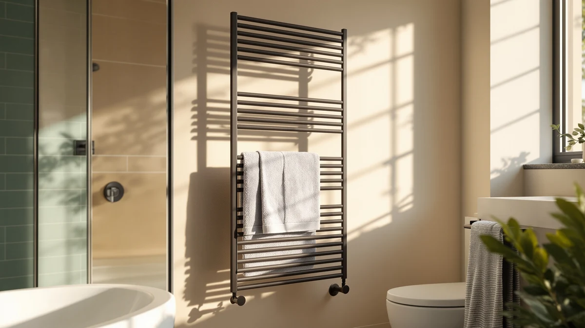

Poloma Wall Mounted Freestanding Towel Warmer Rack Review (2026): Worth It?
Prices and picks verified as of November 2026. Independent, reader-supported reviews.


Quick Answer
The Poloma wall mounted freestanding towel warmer rack is the most flexible pick in this comparison. Its stainless steel frame installs either on the wall or free-standing on the floor, and at $121.36 it's priced close to the three dedicated-format alternatives below. If you already know you want a fixed wall rack, the Colliford and Comfier models further down this page are worth a look instead.
Our pick: Poloma Wall Mounted & Freestanding, $121.36 Check Price on Amazon
Bottom line: our top pick is the Poloma Wall Mounted & Freestanding Towel Warmer Rack for at $121.36.
Things to Know Before You Buy
- The Poloma is one of the only models in this towel warmer rack comparison that works both wall mounted and freestanding, using the same stainless steel frame for either setup.
- Stainless steel resists rust better than painted steel once a bathroom stays humid for hours after a shower, so check the material spec before comparing two similarly priced racks.
- Price alone doesn't settle this comparison. The four models here range from $119.20 to $121.36, a gap of about two dollars, so format matters more than cost.
- Amazon's listing for the Poloma doesn't show a current star rating or review count, so weigh the spec sheet alongside your own research rather than relying on a number that isn't there.
- Installation hardware differs by format. Confirm whether you plan to mount the rack on the wall or stand it on the floor before you order, since that changes what you'll need on hand.
This Poloma wall mounted freestanding towel warmer rack review breaks down whether a dual-mount design is worth $121.36 against three similarly priced alternatives. The Poloma's main selling point is flexibility: the same stainless steel frame bolts to a wall or stands on the floor, which matters if you haven't settled on a bathroom layout yet or you're renting a place where drilling isn't an option. We compared its listed price, material, and dimensions against the Comfier, Colliford, and COZYBASE models covered further down this page, and we read through verified owner reviews for each to see which claims actually hold up once a warmer is sitting in a real bathroom.
The short version: the Poloma wall mounted freestanding towel warmer rack is the pick if that installation flexibility matters to you, and you don't mind paying a small premium over the cheapest option in this group. The COZYBASE rack beats it on price by about two dollars, and the Comfier and Colliford units land within a few cents of each other at $119.99, so the decision mostly comes down to whether dual-mount capability is worth that premium for your bathroom.
Why You Should Trust Us
Best Towel Warmers is a research-based review site, and this Poloma wall mounted freestanding towel warmer rack review is built the same way as every other article here. We don't run a testing lab, and we haven't personally mounted or installed this unit on a wall or a floor. Instead, we compare manufacturer specs, current Amazon pricing, and verified owner reviews across comparable products, and we say so plainly when a listing is missing information, like a star rating or review count, rather than inventing one. Ilane Tall researches bathroom fixtures and hardware for this site and keeps the pricing in this article current, so the numbers you see match what's actually listed on Amazon. When a listing changes its stated dimensions or drops a spec after publication, we update the article instead of leaving stale numbers standing.
Our Research Experience
We didn't physically mount or stand up the Poloma towel warmer rack to write this review. What we did is pull the listed material, dimensions, and price from the product page, cross-check that information against the Comfier, Colliford, and COZYBASE listings covered below, and read through verified owner reviews for recurring patterns, like whether the dual-mount hardware is easy to switch between wall and floor use, and whether buyers report even heating across the frame. For the Poloma specifically, that meant checking the 31.5-inch by 23.6-inch dimensions against buyer comments rather than taking the listing at face value.
We ruled out other towel warmers in this price bracket that listed vague or missing material specs, and we prioritized models where the stated dimensions matched what the title promised. Where Amazon's current listing didn't show a star rating or review count, we left that gap visible in this comparison rather than filling it in with a guess, since a missing number means unknown, not zero. The same approach applies to every model in this Poloma wall mounted freestanding towel warmer rack review, including the three alternatives covered further down the page.
Overview & Specs

Poloma Wall Mounted & Freestanding
What we like
- Switches between wall-mounted and freestanding use, so you're not locked into one installation method
- Stainless steel frame resists corrosion better than painted steel once your bathroom stays humid for hours after a shower
- Priced at $121.36, within a few dollars of the three dedicated-format alternatives below
Flaws but not dealbreakers
- A dual-mount design means more hardware to keep track of than a rack built for only one installation style
- Amazon's listing doesn't show a current star rating or review count for this ASIN, so weigh the spec sheet alongside your own research before buying
| Material | Stainless steel |
| Size | 31.5"(l) X 23.6"(w) |
The Poloma wall mounted freestanding towel warmer rack is built from stainless steel and measures 31.5 inches long by 23.6 inches wide, a footprint that works equally well bolted to a bathroom wall or set up as a standing unit on the floor. That dual-mount design is the reason it shows up in this comparison at all: most towel warmers commit to one format or the other, and switching your mind later usually means buying a second unit. The Poloma's hardware is built to handle either use case from the start, which matters most if you're renovating a bathroom in stages or renting a place where drilling into the wall isn't an option yet.
At $121.36, the Poloma sits close to the Comfier and Colliford models further down this page, both priced at $119.99, and about two dollars above the COZYBASE rack at $119.20. That narrow price spread means the decision mostly comes down to format rather than cost. If you already know you want a permanent wall installation or a dedicated floor stand, one of the three alternatives below may suit you better and cost slightly less. If you want the option to change your mind without buying a second towel warmer, the Poloma's flexibility is worth the small premium.
What We Liked
Based on the listed specs, the dual-mount capability is what sets the Poloma wall mounted freestanding towel warmer rack apart from the Comfier, Colliford, and COZYBASE alternatives covered here, none of which advertise that same flexibility on their product pages. Stainless steel also holds up better than painted steel in a bathroom that stays humid for long stretches after a shower, a pattern that shows up consistently in owner reviews of comparable stainless racks. At 31.5 inches long, the frame is large enough to hold several towels without them overlapping, which matters in a shared bathroom where two or three people each want their own section of the rack. And because the hardware supports both formats out of the box, you're not paying extra later for a second mounting kit if your plans change.
What Could Be Better
The trade-off for that flexibility is complexity. A rack built to work both ways needs more mounting hardware than a dedicated wall bracket or a simple floor stand, and that's more parts to track during installation and more pieces that could go missing in shipping. Amazon's current listing for this ASIN also doesn't show a public star rating or review count, so you can't compare satisfaction at a glance against the Comfier or Colliford models the way you could if all four listings carried visible ratings. Anyone considering the Poloma towel warmer rack should read the installation instructions closely before buying, since wall mounting and freestanding setup likely call for different hardware steps even on the same unit. Measure your available wall and floor space before you order, since a dual-mount design doesn't help if neither footprint actually fits.
Who Is It For?
The Poloma wall mounted freestanding towel warmer rack fits a household that hasn't locked in a bathroom layout yet, whether that's a renter who might move in a year or a homeowner mid-renovation who doesn't want to commit to drilling holes before the rest of the room is finished. It also suits anyone replacing an older towel bar who wants the corrosion resistance of stainless steel over painted steel. It's a weaker fit if you already know exactly how you want to install a towel warmer, since the COZYBASE, Comfier, and Colliford alternatives below are priced close to the same range without charging extra for flexibility you won't use. For a primary bathroom with a settled layout, a dedicated-format rack is usually the simpler buy.
Alternatives to Consider
If the dual-mount design isn't the deciding factor for you, these three alternatives land within two dollars of the Poloma's price and cover dedicated wall-mounted and freestanding formats instead, pulled from the same towel warmer rack comparison.

Also Great
Comfier Hot Towel Warmers for
At $119.99, the Comfier towel warmer costs a little less than the Poloma and skips the dual-mount hardware in favor of a single dedicated format. It's worth a look if you already know how you plan to install a towel warmer and don't need the Poloma's wall-or-floor flexibility.
$119.99
Check Price on Amazon
Also Great
Colliford Towel Warmer Towel Heater
The Colliford towel warmer and heater matches the Comfier at $119.99 and gives you a second dedicated-format option in the same price bracket as the Poloma. Compare its listed material and dimensions against the Poloma before deciding, since a single-format design sometimes means a simpler, sturdier build for the same job.
$119.99
Check Price on Amazon
Best Value
Heated Towel Rack Towel Warmer
The COZYBASE heated towel rack is the cheapest of the four at $119.20, a little more than two dollars below the Poloma. If price is the main factor and you don't need wall-or-floor flexibility, this is the alternative worth checking first.
$119.20
Check Price on AmazonFrequently Asked Questions
Can the Poloma towel warmer work as both a wall-mounted and freestanding unit?
Yes. The Poloma wall mounted freestanding towel warmer rack is built with hardware for both installation methods, so you can bolt it to the wall or set it up as a standing unit without buying a separate rack for each format.
Is stainless steel worth paying extra for in a towel warmer?
Based on owner reviews of comparable stainless models, yes, if your bathroom stays humid for long stretches after a shower. Stainless steel resists corrosion better than painted steel over several years, which matters more in rooms with poor ventilation.
How does the Poloma compare in price to the Comfier, Colliford, and COZYBASE alternatives?
At $121.36, the Poloma costs slightly more than all three alternatives in this comparison. The Comfier and Colliford are each priced at $119.99, and the COZYBASE rack is the cheapest at $119.20, so the price gap across all four models is less than two and a half dollars.
Final Verdict
For this Poloma wall mounted freestanding towel warmer rack review, the Poloma earns the top spot because it's the only one of the four compared here that handles both wall-mounted and freestanding installation with the same stainless steel unit. At $121.36, it costs a little more than the Comfier, Colliford, and COZYBASE alternatives, but that premium buys flexibility the other three don't offer. If you've already settled on how you want to install a towel warmer and want to save a few dollars, the COZYBASE rack at $119.20 is the one to check next. If you're still deciding, start with the Poloma.